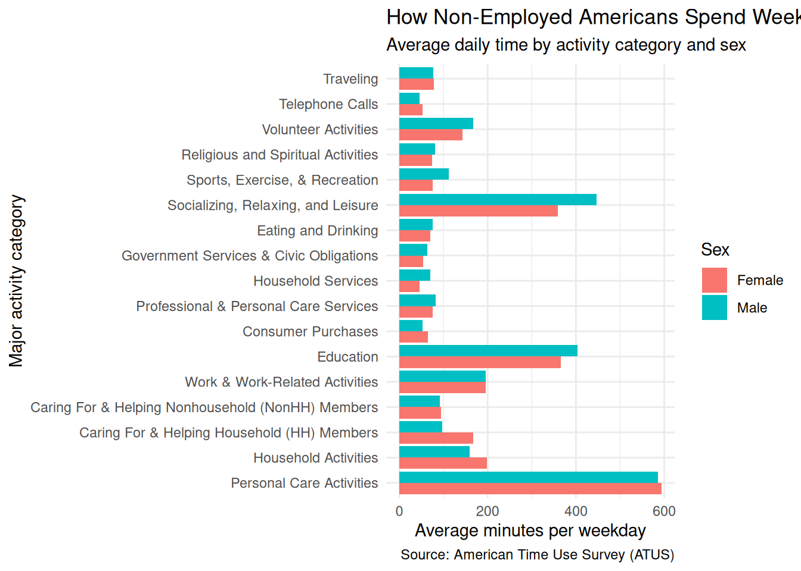
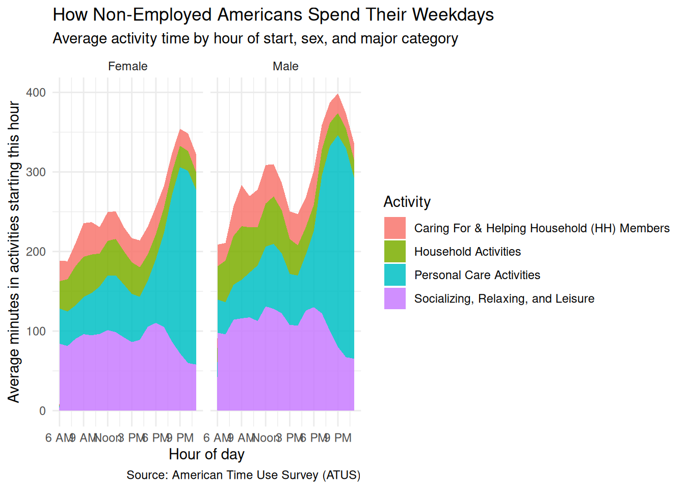

duckdb keeps downloaded extensions and secrets in a temporary directory:
ℹ /tmp/RtmpdW8zDT/duckdb
This is removed when the R session ends.
• Extensions are re-downloaded each session.
• Secrets are lost.
ℹ Run duckdb(shared_home = TRUE) (or create ~/.duckdb) to keep them (suitable for most users).
ℹ Run duckdb(shared_home = FALSE) to accept the temporary directory (and silence this message).
ℹ See ?duckdb_storage for details and alternatives.Analyzing Americans’ Time Use
! Grouped output by "tucaseid", "sex", and "major_code".
ℹ Override behaviour and silence this message with the `.groups` argument.
ℹ Or use `.by` instead of `group_by()`.
! Grouped output by "sex" and "major_code".
ℹ Override behaviour and silence this message with the `.groups` argument.
ℹ Or use `.by` instead of `group_by()`.! Grouped output by "sex" and "hour".
ℹ Override behaviour and silence this message with the `.groups` argument.
ℹ Or use `.by` instead of `group_by()`.# A tibble: 144 × 4
# Groups: sex, hour [36]
sex hour major_name avg_min
<chr> <dbl> <chr> <dbl>
1 Female 14 Socializing, Relaxing, and Leisure 92.1
2 Female 16 Personal Care Activities 54.1
3 Female 18 Socializing, Relaxing, and Leisure 110.
4 Female 19 Socializing, Relaxing, and Leisure 105.
5 Female 23 Personal Care Activities 220.
6 Female 8 Household Activities 49.3
7 Female 9 Socializing, Relaxing, and Leisure 96.0
8 Female 19 Household Activities 31.7
9 Female 22 Personal Care Activities 242.
10 Female 7 Socializing, Relaxing, and Leisure 81.3
11 Female 15 Household Activities 39.8
12 Female 15 Socializing, Relaxing, and Leisure 86.1
13 Female 21 Personal Care Activities 234.
14 Female 7 Household Activities 40.6
15 Female 11 Household Activities 41.5
16 Female 13 Personal Care Activities 71.3
17 Female 14 Household Activities 41.9
18 Female 18 Household Activities 31.3
19 Male 6 Personal Care Activities 41.7
20 Male 15 Personal Care Activities 64.2
21 Male 18 Socializing, Relaxing, and Leisure 130.
22 Male 21 Household Activities 27.8
23 Male 10 Socializing, Relaxing, and Leisure 117.
24 Male 14 Household Activities 54.3
25 Male 14 Socializing, Relaxing, and Leisure 122.
26 Female 9 Household Activities 50.6
27 Female 20 Personal Care Activities 184.
28 Female 6 Household Activities 34.3
29 Female 6 Socializing, Relaxing, and Leisure 84.1
30 Female 10 Socializing, Relaxing, and Leisure 94.7
31 Female 12 Caring For & Helping Household (HH) Members 36.2
32 Female 13 Caring For & Helping Household (HH) Members 34.7
33 Female 17 Personal Care Activities 58.0
34 Female 21 Caring For & Helping Household (HH) Members 21.4
35 Female 22 Caring For & Helping Household (HH) Members 22.2
36 Male 7 Personal Care Activities 40.5
37 Male 9 Household Activities 67.4
38 Female 10 Household Activities 48.3
39 Female 12 Personal Care Activities 68.7
40 Female 17 Caring For & Helping Household (HH) Members 35.0
41 Female 8 Socializing, Relaxing, and Leisure 90.3
42 Male 9 Socializing, Relaxing, and Leisure 116.
43 Male 12 Personal Care Activities 75.1
44 Male 22 Household Activities 24.8
45 Male 23 Personal Care Activities 228.
46 Male 11 Personal Care Activities 69.8
47 Male 21 Socializing, Relaxing, and Leisure 80.0
48 Male 22 Socializing, Relaxing, and Leisure 67.2
49 Female 23 Caring For & Helping Household (HH) Members 22.8
50 Female 11 Socializing, Relaxing, and Leisure 96.5
51 Male 16 Personal Care Activities 62.8
52 Female 20 Caring For & Helping Household (HH) Members 23.8
53 Male 6 Caring For & Helping Household (HH) Members 27.4
54 Male 10 Household Activities 56.8
55 Male 17 Caring For & Helping Household (HH) Members 37.5
56 Male 20 Caring For & Helping Household (HH) Members 25.7
57 Male 19 Personal Care Activities 173.
58 Male 20 Personal Care Activities 232.
59 Male 15 Caring For & Helping Household (HH) Members 34.7
60 Male 18 Household Activities 32.8
61 Male 8 Personal Care Activities 44.0
62 Male 17 Personal Care Activities 70.3
63 Female 16 Caring For & Helping Household (HH) Members 33.9
64 Male 13 Personal Care Activities 81.6
65 Male 11 Caring For & Helping Household (HH) Members 47.5
66 Male 16 Caring For & Helping Household (HH) Members 39.3
67 Male 12 Caring For & Helping Household (HH) Members 48.5
68 Male 13 Caring For & Helping Household (HH) Members 40.4
69 Male 7 Caring For & Helping Household (HH) Members 22.0
70 Male 8 Caring For & Helping Household (HH) Members 37.3
71 Male 19 Caring For & Helping Household (HH) Members 31.1
72 Male 23 Caring For & Helping Household (HH) Members 21.1
73 Female 10 Personal Care Activities 53.2
74 Female 11 Caring For & Helping Household (HH) Members 33.2
75 Female 13 Household Activities 45.8
76 Female 17 Socializing, Relaxing, and Leisure 106.
77 Female 20 Socializing, Relaxing, and Leisure 86.8
78 Female 23 Socializing, Relaxing, and Leisure 57.9
79 Female 7 Personal Care Activities 43.2
80 Female 13 Socializing, Relaxing, and Leisure 98.7
81 Female 17 Household Activities 32.9
82 Female 16 Household Activities 37.0
83 Female 6 Personal Care Activities 44.3
84 Female 12 Household Activities 43.5
85 Female 20 Household Activities 28.7
86 Male 7 Socializing, Relaxing, and Leisure 95.9
87 Male 22 Personal Care Activities 263.
88 Male 8 Socializing, Relaxing, and Leisure 114.
89 Male 13 Household Activities 59.7
90 Male 15 Household Activities 43.9
91 Male 15 Socializing, Relaxing, and Leisure 108.
92 Male 17 Socializing, Relaxing, and Leisure 126.
93 Male 19 Socializing, Relaxing, and Leisure 122.
94 Male 20 Socializing, Relaxing, and Leisure 100.
95 Female 8 Personal Care Activities 42.1
96 Female 16 Socializing, Relaxing, and Leisure 89.0
97 Female 12 Socializing, Relaxing, and Leisure 101.
98 Female 22 Household Activities 24.7
99 Female 22 Socializing, Relaxing, and Leisure 59.8
100 Male 9 Personal Care Activities 48.5
101 Male 16 Socializing, Relaxing, and Leisure 107
102 Female 9 Personal Care Activities 46.8
103 Female 7 Caring For & Helping Household (HH) Members 22.8
104 Female 14 Caring For & Helping Household (HH) Members 30.2
105 Female 21 Household Activities 26.8
106 Female 21 Socializing, Relaxing, and Leisure 72.0
107 Male 7 Household Activities 52.3
108 Male 12 Socializing, Relaxing, and Leisure 131.
109 Male 21 Personal Care Activities 266.
110 Female 6 Caring For & Helping Household (HH) Members 25.5
111 Female 18 Caring For & Helping Household (HH) Members 34.4
112 Female 19 Caring For & Helping Household (HH) Members 27.5
113 Female 11 Personal Care Activities 59.6
114 Female 14 Personal Care Activities 66.6
115 Female 23 Household Activities 22.2
116 Male 6 Socializing, Relaxing, and Leisure 97.9
117 Female 8 Caring For & Helping Household (HH) Members 28.8
118 Female 15 Caring For & Helping Household (HH) Members 30.2
119 Male 10 Personal Care Activities 56.4
120 Male 11 Socializing, Relaxing, and Leisure 113.
121 Male 16 Household Activities 38.0
122 Male 17 Household Activities 34.5
123 Male 19 Household Activities 32.6
124 Male 23 Socializing, Relaxing, and Leisure 65.4
125 Male 11 Household Activities 47.8
126 Male 12 Household Activities 54.1
127 Female 18 Personal Care Activities 80.2
128 Male 8 Household Activities 61.3
129 Male 14 Personal Care Activities 75.3
130 Male 13 Socializing, Relaxing, and Leisure 128.
131 Male 10 Caring For & Helping Household (HH) Members 39.1
132 Female 9 Caring For & Helping Household (HH) Members 42.2
133 Female 10 Caring For & Helping Household (HH) Members 40.7
134 Female 19 Personal Care Activities 118.
135 Female 15 Personal Care Activities 60.7
136 Male 6 Household Activities 41.7
137 Male 18 Personal Care Activities 95.8
138 Male 9 Caring For & Helping Household (HH) Members 51.7
139 Male 23 Household Activities 22.2
140 Male 20 Household Activities 29.2
141 Male 14 Caring For & Helping Household (HH) Members 34.4
142 Male 18 Caring For & Helping Household (HH) Members 43.2
143 Male 21 Caring For & Helping Household (HH) Members 24.6
144 Male 22 Caring For & Helping Household (HH) Members 18.9
